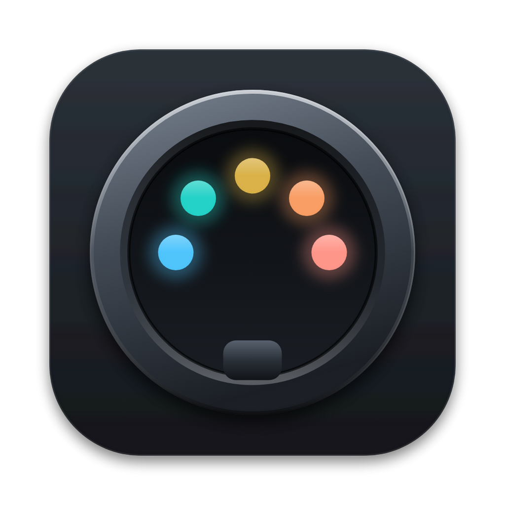

midi-zoner
Since 2020 by privatepublic.de
Version
Version
- Zones: each with its own key range, output device and channel, what passes, velocity and program
- Arpeggiator with strums, ratchets and euclidean patterns; step sequencer for notes and drums, with conditions and parameter locks
- Everything you play is kept as takes; a looper per zone records, overdubs and loops bars of any take
- Chords and bass zones that follow what you play, live or as their loop
- Cards or tracks on a timeline, with a mini view
- Four arrangements (A–D), each with its own meter, switched at the next bar
- Controllers for your devices: knobs, buttons, selectors, 14-bit and NRPN, with device presets
- MPE keyboards passed through or merged onto one channel, their expression recorded in takes and loops
- Internal or external clock, clock outputs, metronome and count-in
- Key switches and Mackie Control; MIDI files imported as takes; scenes saved as files
Source code and the manual on GitHub:
https://github.com/privatepublic-de/midi-zoner